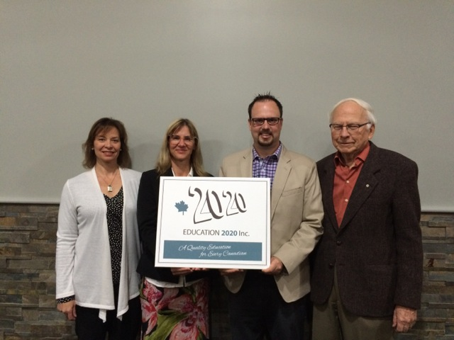

40 May 25, 2016
The school of life never stops teaching. – Steven Aitcheson
Criterion-referenced testing
Criterion-referenced testing is an approach to assessment in which a student’s performance is compared to a predefined set of criteria or standards and not with the work of other test takers. Criterion-referenced testing is used to determine whether a person has reached a predetermined level of achievement and results are usually reported in terms of pass or fail, a driver’s test or an apprentice exam are good examples; all who take the exam may pass or all may fail.
The goal with these tests is to determine the level that a candidate has achieved on a certain skill or set of skills and to use it as a basis for making decisions about job entry, certification, or licensure. The key to criterion-referenced testing is clearly-stated outcomes, a set of clearly-defined levels, an external benchmark and the consistent application of the assessment process.
The assessment process must be transparent and the grades derived should be defined in terms a student understands – students should be able to trace their grades to the specifics of their performance on the tasks that were set. In fact, it is well understood that the discussion between teacher and learner about the grade assigned is an important part of the learning experience; criterion-referenced testing provides a framework for students and teachers to fully engage in the learning process.
Separating the teaching and grading process increases consistency and minimizes bias.
Excellence in Education Award

From left to right: Katherine McQuaid, Maureen Kerr, Jason Biech and Don Glendenning
Grace Christian School was named this year’s winner of the Excellence in Education Award. The award is presented to the school who demonstrates the extent and manner in which it uses technology to enhance learning and teaching. “It was not just the availability of technological tools that impressed the judges, but also the integration of technology in every aspect of the school’s life,” said Don Glendenning, President of Education 20/20.
This was the third year for the Award. Earlier awards focused on engagement and were awarded to Kincora Regional High School and Prince Street Elementary School. The Award was open to all schools and learning centres on Prince Edward Island.
Editor – Don Glendenning
_______________________________________
Education 20/20 Inc.
101 Kent St., PO Box 624 / 101, rue Kent, B.P. 624
Charlottetown, PEI / Charlottetown (Î.-P.-É.) C1A 1M0
Tel./Tél. : 902-892-2060
Email/Courriel : pei@education2020.ca
URL : www.education2020.ca